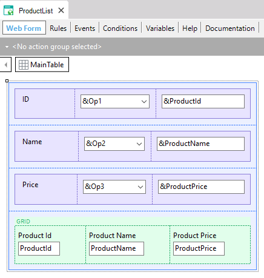
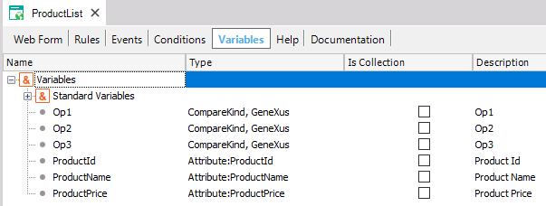
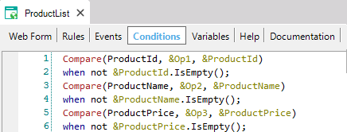

Compares two values using the indicated operator ('=', '>', '>=', '<', '<=', '<>', 'like') which can be dynamic (for example, entered by the end-user at runtime).
Compare(<value1>,<operator>,<value2>)
Where:
<value1>
Is an attribute, variable or fixed value.
<operator>
Is a specific value of the predefined CompareKind Enumerated Domain.
<value2>
Is an attribute, variable or fixed value.
Type returned:
Boolean
Generators: .NET, .NET Framework, Android
If you want to compare two values having the operator entered by the end-user at runtime, by using the Compare function, the code generated by GeneXus will be shorter than the result of defining:
&a>&b when &operator = '>';
&a<&b when &operator = '<';
&a=&b when &operator = '=';
Also, the generated code will be better because a SELECT string will be created including the corresponding operator.
CompareKind is a predefined Enumerated Domain, whose Enum Values are:
CompareKind
{
.Equal - '='
.Greater - '>'
.GreaterOrEqual -'>='
.Less - '<'
.LessOrEqual - '<='
.NotEqual -'<>'
.Like -'like'
}
You can use the function anywhere an expression is supported.
Consider the following Transaction object:
Product
{
ProductId*
ProductName
ProductPrice
}
and the following Web Panel object whose Web Form, Variables and Conditions are shown below:



As shown, the end-user in runtime can select the &Op1, &Op2 and &Op3 values and the chosen operators are being taken into account to filter in the Conditions section.
This property is available since GeneXus 16 upgrade 1.